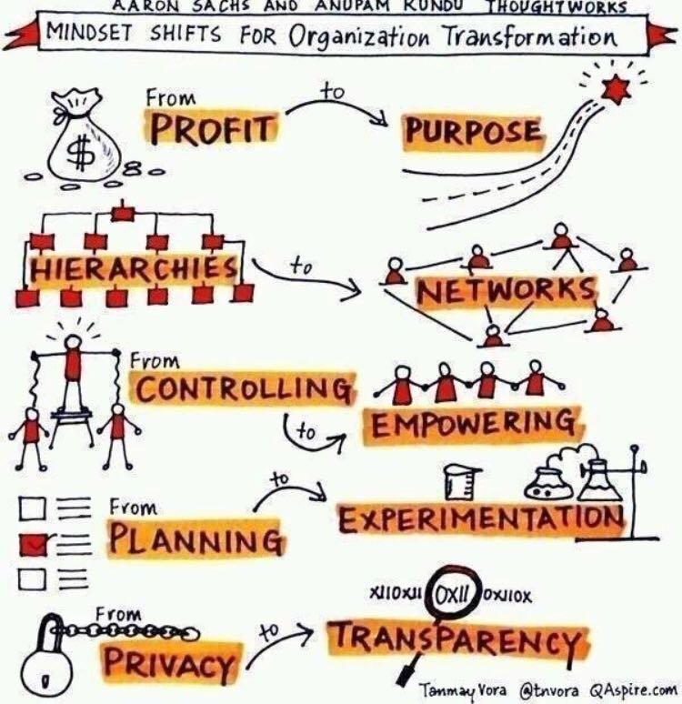

Como marketeiros podem acelerar o desenvolvimento da sua empresa em apenas 6 meses?
Leia tudo até o final que eu vou te explicar como desenvolver sua empresa para que ela trabalhe por você, tenha um valor de mercado e você consiga até mesmo vendê-la no futuro a ponto de não precisar mais trabalhar na vida.
Clique aqui se você já sabe do que se trata e deseja realizar a sua pré-inscrição.
(a próxima turma será fechada com no máximo 24 participantes até 15 de dezembro)
Você já faturou mais de um milhão e agora sente a dor de organizar a sua empresa?
Se ainda não faturou nem R$ 1 milhão com seus produtos digitais, você está no lugar errado.
Por favor, deixe essa página e vá buscar os gurus de marketing digital.
Existem aos montes.
E eles vão te ajudar melhor no seu momento de vida.
Caso já tenha faturado ao menos R$ 1 milhão no ano, leia com atenção esse texto que ele é pra você.
Porque você está no momento em que não consegue mais resolver as coisas sozinho.
Você precisa começar a contratar...
Delegar algumas tarefas...
E fazer a gestão do time que está nascendo.
Não só do time, mas de todos os recursos:
Tempo.
Dinheiro.
Pessoas.
E rapidamente se vê trabalhando 14 horas por dia.
Sem conseguir dar conta de tudo que precisa fazer.
Ou que poderia fazer...
para crescer ainda mais o seu negócio.
Sabe porque isso acontece?
Porque o tamanho da sua empresa é limitado pela sua cabeça.
Vou apresentar 3 pontos relevantes e o primeiro é...
A cabeça dos marketeiros está muito limitada :(
Explico.
Eu sou empreendedor serial, já fundei algumas empresas e já até saí da operação de uma delas, me mantendo como sócio.
Mais difícil que construir uma empresa, é conseguir fazê-la funcionar sem o seu trabalho.
Na mais nova empresa que criei, conheci a comunidade dos marketeiros digitais e criadores de infoprodutos.
Está sendo uma experiência interessante.
Eu construí um infoproduto e lancei, em 4 meses de trabalho.
Esse meu primeiro lançamento foi de 7 dígitos, com um ROI de 20,71.
Sim!
Mais de um milhão de reais em faturamento e
ROI superior a 20.
Não foi bom!?
Pois é, eu não afirmaria isso somente com esses números.
Até porque esse ROI é calculado considerando apenas custo de marketing.
Com essa experiência eu percebi que o mindset desse mercado é limitado!
Não só por isso,
mas por outras questões que explico mais a frente.
Faturamento e ROI (considerando o investimento no marketing apenas) parecem ser bem relevantes nesse mercado.
O padrão dos marketeiros é:
Buscar 7 dígitos no primeiro lançamento...
Buscar faturar mais e pensar em uma esteira de produtos:
- front-end de baixo valor,
- middle para vender em massa e
- high com um valor alto para poucos.
Buscar ter uma base de fans cada vez maior...
Se tornar uma autoridade,
ser reconhecido...
Porque quanto mais seguidores de qualidade, maior o faturamento.
Não é isso?
E é aqui que entra o segundo ponto relevante:
Empresários com negócios que faturam dezenas de milhões de reais não pensam assim!
Nós empresários olhamos muito mais para o bottom line do que para o faturamento.
Você já ouviu falar em bottom line?
Esse termo significa o lucro ou resultado financeiro de uma operação.
Por exemplo, na minha operação o investimento em marketing foi baixo, mas rolou um investimento em equipe e produção mais relevante.
O ROI "real" foi um pouco superior a 5.
O que ainda é um excelente número.
Mas para analisar o negócio, precisamos saber qual foi o lucro líquido da operação.
Tivemos um lucro líquido de 33,34%
Já considerando retornar o investimento realizado.
Isso sim é um belo resultado sob a ótica de um empresário!
Fizemos o payback do investimento em 4 meses e ainda obtivemos um percentual de lucro bastante alto.
Agora sim, com essas informações, eu sou capaz de dizer que fomos bem sucedidos =)
Mas não é só o bottom line que importa.
Existem outras coisas que são muito mais relevantes e que os marketeiros digitais estão deixando de lado.
Eu faço parte de um grupo de empresários de alto nível que se reúne de tempos em tempos para trocar ideias.
Neste grupo estão os CEOs para o Brasil ou América Latina de empresas grandes como American Tower, Ânima, BRQ, Dafiti, Dolce & Gabbana, Embratel, GM, IBM, Monsanto, Schneider e mais...
Nos encontramos no Botanique, um hotel pós-luxo maravilhoso em Campos do Jordão.
Discutimos sobre vários assuntos, desde propósito até sustentabilidade.
É um ambiente muito rico que reúne mentes brilhantes que tem poder de melhorar o país.
Tenho aprendido bastante com esse grupo e em se tratando de inovação e tecnologia tenho colaborado bem.
Por essa e outras experiências, eu digo que nós empresários buscamos:
- Desenhar um modelo de negócio otimizado;
- Montar organizações exponenciais e escaláveis;
- Extrair alta margem de lucratividade;
- Estruturar times de alta performance;
- Montar uma cultura organizacional saudável;
- Definir e buscar um propósito maior;
- Buscar sustentabilidade como fator chave;
Essas são questões extremamente relevantes para quem deseja crescer.
Existe outra questão ainda mais importante.
Pra explicar, vou te contar uma história.
Eu fundei a BielSyatems, minha primeira empresa, no ano de 2003...
Depois de bater cabeça durante 5 anos, fui trabalhar em uma empresa com dois grandes empresários, chamada Myfreecomm.
Escolhi a empresa por conta deles.
Nada além.
Fiquei lá por 3 anos.
Depois de aprender como eles pensavam, eu saí.
Conviver com eles foi fundamental para as minhas realizações futuras.
Porque eu pude captar a maneira de pensar,
e expandir a minha cabeça.
Ao sair montei um novo negócio chamado Startup DEV.
O Startup DEV foi super inovador,
saiu na Exame,
foi copiado por várias empresas,
Enfim, foi um grande sucesso.
Me gerou o ingresso na recém fundada HE:labs.
A HE:labs hoje tem um time de 60 pessoas,
Todas trabalham remotamente.
Tem uma cultura animal.
No escritório, uma piscina de bolinhas...
... um freezer da Heineken...
... um sófa barco.
Sim, um barco, dentro do escritório!
Muitos pufes, uma rede no teto pro pessoal deitar, um quarto com 8 camas, armário do Pacman, enfim...
É muito cool!
A gente chama isso de Ducaralhice
Medimos o índice de ducaralhice da empresa.
E fazemos isso porque prezamos pela cultura.
E pensamos em longo prazo.
Por tudo que fizemos, ela tem um bom valor de mercado,
e esse é o terceiro ponto relevante:
As empresas dos infoprodutores não valem nada sem eles.
O que isso quer dizer?
Antes de mais nada precisamos conversar sobre vender uma empresa.
Como dono e fundador, é sempre bom você ter a opção de vender a sua empresa.
Faturamento é bom.
Lucro é melhor.
Mas vender a sua empresa é ainda melhor.
O valor de uma empresa é diretamente proporcional à capacidade que ela tem de gerar lucro...
Mas a capacidade de lucrar não é o único fator.
Outro fator muito importante é:
O comprador da sua empresa consegue mantê-la fazendo dinheiro após a compra?
É isso que ele irá analisar.
Se você é o produto do seu negócio...
... isso quer dizer que a empresa só tem valor com você dentro dela :(
Sem você, a empresa não vale nada!
Duas coisas acontecem nesse caso:
- Você consegue até vendê-la, mas precisa continuar trabalhando por muitos anos, ou
- Você não consegue vendê-la porque o comprador percebe uma dependência muito grande em você.
Os dois cenários não são ideais...
Lembra que eu falei que sai da operação da minha empresa?
Isso quer dizer que eu consigo vendê-la,
colocar o dinheiro no bolso,
sem precisar mais trabalhar!
Não é lindo!?
É isso que você deveria buscar.
Parece distante ou difícil pra você?
E se eu te disser que vivi exatamente o que você vive agora?
É verdade.
Eu conheço profundamente esse problema.
E a saída para ele.
Eu posso te mostrar o caminho.
Prazer,
Meu nome é Rafael Lima.
Eu sou empreendedor serial e já fundei algumas empresas.
Sou também nômade digital e nos últimos 5 anos viajei na média mais de 4 meses por ano para o exterior...
... enquanto trabalhava e acompanhava as empresas!
Montei times que trabalham remotamente com produtividade ainda superior à de times convencionais.
Conquistei a liberdade financeira, geográfica e de tempo.
Em outras palavras,
não trabalho pela necessidade do dinheiro,
posso trabalhar de qualquer lugar do mundo e
monto minha agenda como eu quero, dia a dia.
Eu demorei 14 anos para conseguir chegar nesse ponto.
Deixei muito dinheiro na mesa.
Aprendi nos erros e acertos.
Mas agora sei como fazer pra organizar uma empresa que não dependa do meu trabalho.
Você deseja desenvolver sua empresa, montar um time remoto e trabalhar de qualquer lugar do mundo a qualquer hora?
A boa notícia é que você pode!
E não precisa demorar tanto tempo como eu.
Recentemente resolvi criar o meu próprio grupo de Mastermind.
Com um único propósito:
Ajudar os marketeiros autônomos a se tornarem empresários bem sucedidos.
Se você já fez alguns lançamentos, montou sua esteira de produtos, lead magnets, perpétuo, etc. e já faturou mais de R$ 1 milhão, esse grupo é para você.
Eu imagino que:
Você já deixou de trabalhar sozinho.
Você possui um time pequeno.
Você quer crescer.
Você precisa crescer.
Você tem o desafio de estruturar uma empresa.
Você sabe que precisa se rodear de empresários bem sucedidos.
Se eu estou certo,
você então é um candidato a participar do Prosperus!
O que é o Prosperus?
Prosperus Mastermind é a sua chance de estar junto de empresários bem sucedidos, trocar inside informations, aprender sobre gestão de empresas, expandir o seu networking, formar parcerias e fazer negócios que podem durar para sempre.
No grupo dos CEOs que eu comentei acima, já aconteceram muitas trocas sensacionais. Já apresentei meus produtos para mais de 10 empresas e em menos de um ano fiz negócios com uma delas.
O Prosperus Mastermind foi criado com os seguintes objetivos em mente:
- Juntar marketeiros experientes ligados à nova economia para compartilhar estratégias, oferecer conselho e compartilhar o que tem funcionado em suas empresas.
- Nutrir um ambiente de parcerias entre os participantes para que as empresas possam crescer juntas se complementando e se apoiando em suas estratégias.
- Promover aprendizado sobre gestão por meio de workshops e aulas online ao vivo para que os participantes conheçam executem as melhores práticas de gestão moderna.
- Elevar o nível do mercado de marketing digital do Brasil que ainda é Underground e muito pouco profissional.
Um grupo de Mastermind como esse vale mais que um MBA em uma escola técnica.
O Prosperus Mastermind traz a mentalidade das empresas do futuro.
O grupo é pautado em empresas que valorizam os valores à direita do gráfico.

Empresários experientes e disruptivos no mesmo grupo
Eu convidei os melhores empreendedores que conheço que fundaram e mantêm suas empresas até hoje com uma pegada diferente.
São donos e fundadores de pequenas e médias empresas que faturam mais que R$ 1 milhão por ano e que já possuem um time e processos estruturados.
Todos rodam empresas saudáveis com times de alto impacto e um modelo de negócios rentável.
Todos participam como pares e compartilham suas experiências nos encontros que realizamos.
Leia ANTES de se aplicar
A afiliação ao Prosperus é somente para convidados, e é aberta apenas algumas vezes ao ano. Com isso em mente, seguem algumas coisas para considerar antes de se aplicar:
Temos uma política forte de colaboração. Todos os participantes do grupo estão dispostos a colaborar com os demais. Ninguém entra no grupo apenas para extrair conhecimento dos outros. Nós valorizamos o Give, give, give. Se você tiver um pensamento de somente aproveitar, sem colaborar fatalmente será impedido de renovar a sua afiliação. No final das contas esse é um grupo de negócios sem competição.
Selecionamos pessoas com maturidade de negócio, ou seja, o grupo é composto por donos de negócios estabelecidos, que já tenham faturamento regular. Se você está na fase de ideias e não é capaz de gerar um retorno sobre o investimento da sua afiliação, por favor não se inscreva.
Escolhemos programas de treinamento em gestão disruptiva como pilar para as discussões, então é importante que você esteja interessado em montar uma empresa de verdade, contratando pessoas e montando um time. Se você pretende continuar sempre como um lobo solitário, esse grupo não é pra você.
No longo prazo, nosso objetivo é que sua empresa prospere.
Se você ainda está lendo esse texto, posso assumir com segurança que você está bastante interessado em entrar nesse grupo, então vamos falar sobre como é participar do Prosperus
Como funciona a dinâmica do grupo?
O grupo se mantém conectado a todo momento.
Criamos um grupo no Whatsapp onde todos podem trocar ideias.
E pedir ajuda em momentos difíceis.
Além disso nos conectamos todo mês durante 6 meses.
Um encontro por mês de 3 horas, estruturados da seguinte maneira:
- Apresentação de um case de empresa de um convidado especial;
- Hot-seats, dinâmica em que os participantes contam seu problema atual e todos dão suas opiniões;
Além das reuniões do grupo, temos workshops e aulas online.
Intercalando os workshops e aulas ao vivo a cada mês.
Ao realizar a sua aplicação, eu envio uma apresentação com os links de referência de cada workshop e facilitador.
Os três workshops são:
1. Workshop Officeless
Conheça na prática as principais ferramentas, hábitos e processos que vão fazer você e a sua equipe adotarem o trabalho remoto de uma vez por todas.
Esse workshop é para quem está procurando...
- Saber como implementar o trabalho remoto na sua equipe de uma forma fácil e funcional.
- Saber se o trabalho remoto é o caminho certo para você ou sua equipe.
- Manter seus projetos rodando independente da sua localização.
- Se conectar com mais pessoas (clientes, parceiros e possíveis membros do time).
- Melhorar a maneira que sua equipe distribuída opera.
- Aumentar a qualidade de vida das pessoas no seu time.
Conheça os facilitadores:
Rafael Torales possui mais de 9 anos de experiência gerenciando times e projetos a distância. É um dos sócios do Startaê, um estúdio de design que atende startups de diversos lugares do mundo. Hoje, ele também é um dos líderes do movimento Officeless, que incentiva e ajuda pessoas e empresas a adotarem o Trabalho Remoto.
Victoria Haidamus é Product Designer no Startaê, um estúdio de Design para Startups que conta com um time e clientes distribuídos pelo mundo. Hoje, ela está a frente do Officeless, um movimento que incentiva e ajuda pessoas e empresas a adotarem o Trabalho Remoto.
2. Workshop Gestão Disruptiva
Programa online de imersão que tem duração de 5 semanas e que foi projetado para fazer os participantes repensarem os velhos conceitos e práticas da administração científica de empresas.
Com a ajuda de um facilitador, você trabalhará com um pequeno grupo de changemakers para superar crenças antigas e desenvolver novas capacidades de gestão, discutindo alternativas e estratégias de transição para uma gestão mais centrada nas pessoas.
Você vai descobrir como substituir o comando e controle por uma gestão baseada em autonomia e colaboração. Vai aprender novas maneiras de desenvolver uma empresa para que o negócio consiga inovar a partir do alinhamento de propósitos e do trabalho em equipe.
O programa apresenta uma nova maneira de pensar sobre gestão empresarial. Nessa experiência de aprendizagem emergente, você vai trabalhar com um seleto time de profissionais que compartilham problemas na gestão e desafios corporativos semelhantes.
Você buscará respostas para perguntas como essas:
- É possível utilizar a capacidade coletiva para escolher a melhor forma de gerir um negócio?
- É possível construir relações de confiança entre as pessoas para que possam ter acesso às informações estratégicas da empresa?
- Como as decisões são tomadas em uma empresa sem organograma e definições de cargos e responsabilidades?
- É possível fazer a gestão de uma empresa sem gerentes ou coordenadores?
- Como criar um ambiente de trabalho que permita o engajamento real das pessoas no negócio?
- Como são feitas as definições sobre salários e planos de carreira numa empresa sem hierarquia formal?
- Como empresas pioneiras no uso de modelos de gestão centrado nas pessoas estão respondendo essas questões?
Conheça o facilitador:
Matheus Haddad é fundador do Instituto Haddad, co-fundador da Webgoal (empresa premiada nacionalmente pelo SEBRAE por adotar um modelo de gestão inovador e revolucionário), co-fundador do Granatum e idealizador do Clube de Empreendedores de Poços de Caldas.
3. Workshop Imersão HE:labs
A HE:labs é uma empresa que adotou uma cultura diferenciada e um modelo de gestão não convencional desde sua fundação. Hoje a empresa conta com mais de 60 colaboradores que trabalham remotamente em mais de 20 cidades diferentes pelo Brasil e pelo mundo.
Um dos sócios mora em Portugal, outro na Espanha e os outros no Rio de Janeiro, São Paulo e Curitiba. Os funcionários têm a mesma liberdade, podems morar onde quiserem. Alguns são nômades e vivem viajando enquanto trabalham. Micro-gerenciamento e hierarquia com abuso de poder não existem na empresa.
No escritório você encontra uma piscina de bolinhas, um freezer da Heineken sempre cheio de cerveja, uma máquina de pinball, e um ambiente super descontraído.
Todos os funcionários tem ma grande autonomia, têm acesso a todos os números da empresa, sem excessão e participam das decisões estratégicas.
O salário dos sócios que estão trabalhando na empresa é definido pelos funcionários.
Esse workshop visa fazer uma imersão na cultura da empresa e no seu modelo de gestão, que é baseado em times de interesse. Você vai entender como a empresa funciona dessa maneira, o que foi preciso fazer e como foi a trajetória até chegar nesse ponto de maturidade.
Conheça o Facilitador:
Rafael Miranda é sócio da HE:labs e CEO e fundador da Impulso, empresa exponencial focada em alocação de times sob demanda para projetos de software. Atua como Designer Organizacional e colabora para nutrir uma cultura organizacional realmente diferenciada, pautada em abordagens descentralizadas de gestão e focada em valores como autonomia, transparência, melhoria contínua e colaboração.
As três aulas on-line são:
- Gestão Pragmática com Juan Bernabó;
- Times auto-gerenciáveis com Ian Borges;
- Nomadismo Digital com Patrícia Figueira e Vinicius Teles;
Conheça os facilitadores:
Juan Bernabó é Nerd, Empreendedor, especialista em Gestão e Inovação Pragmática e Startups, ele é fascinado com o futuro e como a Disrupção Digital está e irá cada vez mais transformar o dia a dia das pessoas, negócios e a sociedade como um todo e sua missão é ajudar pessoas e organizações a se repensar. Acredita que muitos dos problemas que vivemos na atualidade tem a ver com a forma como temos gerido os recursos e os talentos e que é necessário repensar a gestão para este século. Ele é fundador das comunidades AgileBrasil e StartupBrasil que hoje conta com mais de 30.000 empreendedores, Introduziu Scrum no Brasil em 2006, é fundador da Teamware do Brasil, da Germinadora, e criador do Pragmatic Management Approach.
Ian Borges tem mais de 12 anos de experiência trabalhando para grandes multinacionais, incluindo L'Oréal e Linde Gas em Learning & Development, Marketing Digital, Comunicações, CRM e papéis de comércio eletrônico no Brasil, França e Estados Unidos. Hoje, seu objetivo na vida é ajudar os indivíduos a viver vidas com mais significado, com liberdade e propósito.
Patrícia Figueira e Vinicius Teles são o primeiro casal de nômades digitais do Brasil. Estão viajando desde 2010, já visitaram mais de 300 cidades em mais de 65 países. Hoje vivem a vida de viajantes perpétuos e estão criando produtos para as pessoas que desejam desfrutar da mesma vida que eles têm.
Existem algumas REGRAS no grupo
Comprometimento
Todos os participantes estão realente comprometidos com seus resultados e com sua transformação pessoal como empresário. A participação em todas as reuniões bem como nos workshops e aulas on-line é requerida. Ao entrar para o grupo você se compromete a participar de todos os eventos e processos.
Colaboração
O verdadeiro valor do grupo está no brainstorming realizado quando um membro apresenta um problema, um desafio ou uma decisão que precisa tomar, e todo o grupo participa na discussão. Os melhores membros são aqueles que estão dispostos a pedir ajuda e também ajudar os outros. É esperado que todos participem das discussões de uma forma balanceada entre ser ajudado e ajudar.
Não Competição
Para que haja um ambiente seguro, de forma que todos se sintam confortáveis de abrir suas ideias e compartilhar seus problemas, não aceitamos competidores no grupo. Ao realizar a afiliação, avaliaremos se não existe nenhuma pessoa com um negócio que possa ser competidor do candidato. Caso positivo a afiliação não será aceita.
Confidencialidade
Todas as informações compartilhadas no grupo são confidenciais e para uso do grupo apenas. Compartilhar informações confidenciais é estritamente proibido. Você não pode usar as informações confidenciais divulgadas no grupo para ensinar outras pessoas ou montar um curso especial. Qualquer membro que violar essa regra será banido e não terá seu dinheiro de volta.
Convidados
Não são permitidos convidados além dos que estiverem inscritos no grupo. Você não pode compartilhar seu acesso e nem convidar outras pessoas para participarem das reuniões junto com você. O grupo é fechado somente para membros.
Respeito
Todas as iterações entre os membros são baseadas em um alto nível de respeito. Opiniões divergente não podem ser motivos para discussões e desentendimentos. Prezados pela divergência de opiniões e focamos em aprender com as diferenças.
Como você entra para o grupo?
A afiliação ao grupo é avaliada sob os seguintes critérios:
- O quanto você está disposto e pode colaborar com o grupo;
- Qual o seu tipo de negócio e o quanto você vai poder se aproveitar do grupo;
- O nível de match entre o seu perfil e o perfil dos demais participantes;
- Recomendações dos outros participantes;
O primeiro passo é fazer o pagamento da taxa de pré-inscrição no valor de R$ 500,00
Esse pagamento é importante para firmar o compromisso e o seu real interesse em participar.
Só aceitamos conversar com pessoas comprometidas.
Após realizar a pré-inscrição, teremos um bate-papo online para nos conhecermos melhor.
Caso você não seja selecionado, o pagamento é reembolsado imediatamente.
Caso você seja selecionado, deverá pagar à vista os R$ 9.500 restantes pela afiliação de 6 meses.
Esse valor de investimento não é negociável.
Se esse valor parece alto, é um sinal vermelho de que esse grupo não é pra você.
Isso pode soar mal, mas pense sobre isso...
Se você tem um negócio com potencial de crescimento, cada ano que passa que você continua fazendo as mesmas coisas, representa uma quantia considerável de dinheiro que você está deixando na mesa.
Entrar nesse grupo vai permitir que você capture esse valor perdido e ganhe um tempo precioso.
Veja que esse investimento representa menos de 1% do seu faturamento anual.
Menos de 1%
Considere o custo de oportunidade e o potencial de crescimento do seu negócio e perceberá que o valor desse investimento é irrelevante.
Chame seu sócio.
Ainda melhor se vocês puderem participar juntos.
Eu ofereço a opção de trazer um sócio pelo valor adicional de R$ 5.000
Essa opção é apenas para sócios da sua empresa. Não é válida para amigos, familiares, funcionários ou parceiros de qualquer natureza.
Qualquer dúvida, fique à vontade para falar comigo.
Clique agora em Continuar para realizar o pagamento da pré-inscrição e submeter a sua aplicação.
Você será aprovado caso atenda às seguintes exigências:
Já faturou mais de R$ 1 milhão no ano.
Possui um time de no mínimo 3 pessoas.
Está comprometido em desenvolver uma empresa.
Deseja montar um time e contratar pessoas.
Está disposto a compartilhar fracassos e sucessos com os demais participantes.
Está comprometido com os valores do grupo.
Consegue retornar o investimento no Mastermind com seu faturamento atual.
Se por acaso você passar pelas exigências e for aceito no grupo, essa experiência provavelmente mudará a sua vida para sempre, e você poderá mudar a vida de todos os participantes.
Eu realmente espero que isso aconteça!
Um abraço,


Fundador do Prosperus e algumas outras empresas
P.S.
Lembre-se que você tem a chance de economizar alguns anos da sua vida, agora.
Esse Mastermind conta com:
- workshop Officeless sobre gestão de times com trabalho remoto;
- workshop Gestão Disruptiva sobre novas abordagens de gestão de empresas;
- workshop Imersão HE:labs sobre o modelo de gestão inovador da empresa;
- aula ao vivo sobre Gestão Pragmática com Juan Bernabó;
- aula ao vivo sobre Autogestão com Ian Borges;
- aula ao vivo sobre Nomadismo Digital com Patrícia Figueira e Vinicius Teles;
- uma reunião por mês com todos os participantes.
- grupo no Whatsapp para receber ajuda em momentos difíceis.
- participação nos Hot Seats para compartilhar seus problemas e receber conselhos.
Não ficou claro? Veja a apresentação do Prosperus Mastermind.
Perguntas Frequentes
Quando são os encontros?
São 6 encontros online e ao vivo, um em cada mês com duração de 3 horas, das 19h às 22h.
Quantos membros existem no grupo?
O grupo é composto por no máximo 24 pessoas.
Como sei se tenho o perfil para participar?
Como regra geral, sua empresa precisa faturar no mínimo R$ 1 milhão por ano e seu time precisa ter no mínimo 3 pessoas. Mas eu abro excessão para as pessoas que possuem algum skill específico que é de interesse do grupo.
Quanto tempo vai demorar para eu ter o resultado da minha aplicação?
A aplicação é revisada em geral em 1 dia, mas por favor aguarde até 3 dias úteis para aprovação porque pode ser que haja alguma possível competidor no grupo que eu vá precisar consultar.
Minha empresa é bem sucedida, mas não é uma empresa digital, posso participar?
SIM! Prosperus é sobre montar negócios prósperos. Ponto.
Não importa a natureza da sua empresa, você poderá aproveitar a experiência deste Mastermind.
Clique aqui para se inscrever → (a próxima turma será fechada com no máximo 24 participantes até 15 de dezembro)